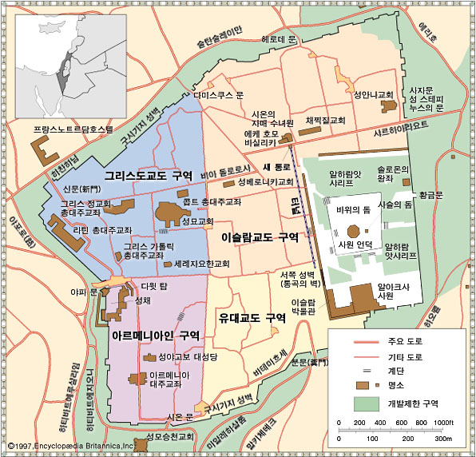

예루살렘
예루살렘 지도. 네 구역으로 구분되어 있음
1사분면: 무슬림.
2사분면: 기독교지역. 골고타 언덕, 거룩한 무덤 성당
3사분면: 아르메니아 지역. 세계 처음 기독교 공인한 나라다.
4사분면: 유대인의 성지. 통곡의 벽 (유대교의 최대 성지), 시온게이트로 이스라엘 본토와 연결됨.

아브라함 3 종교 유대교, 기독교, 이슬람교의 성지
유대교
다윗 왕국의 수도, 솔로몬이 성전을 세움. 경제적, 군사적 요지.
험한 산지이고 물을 구할 수 있었다.
바빌로니아에 의해 파괴
서기 70년 로마에 의해 점령. 통곡의 벽만 남음
기독교
예수가 처형 당한곳. 골고타 언덕 등
현재 기독교 계통의 종교 6개 교구의 본부가 있음
이슬람교
예루살렘의 1/3이 아랍인이다.
마호메트가 신의 계시를 받았다는 바위 위에 바위의 돔 사원을 지음. 유대교의 성지.
622년 이후
정통 칼리파 시대 (632~661)
무마이아 왕조 (661~750년)
압바스 (749~1258년, 셀주크 투르크에 의해 멸망)
1231년 몽골 제국
1299~1922년: 오스만 투르크 (조선 시대와 유사).
1453년 비잔티움을 멸망 시킴. 콘스탄티노플 --> 이스탄블로 이름을 바꿈
1922년 이후
일: 1차 세계대전 후 오스만 붕괴. 작은 나라들 독립
석: 1908년 이란에서 석유 발견
이: 이스라엘 건국 (1948년)
슬: 이슬람 근본주의???
이스라엘-요르단 분할 --> 팔레스타인의 수도
2017년: 트럼프 미대사관을 예루살렘으로 이전
베를린처럼 동서로 분리됨. 지금은 이스라엘의 실효 지배(?)
2차 대전 후: 이스라엘과 팔레스타인 영토를 분리할 때, 예루살렘은 UN이 관리하도록 함
1948년: 이스라엘 건국 전쟁 시, UN결의는 무시되고, 요르단과 이스라엘이 분할 관리하게 됨
1967년: 3차 중동전쟁에서 이스라엘이 승리하고 예루살렘을 통일 실효 지배. 행정 수도로 이용
1993년: 팔레스타인의 헌법 상의 수도. 동쪽 농촌 지역을 실효 지배함
2017년: 트럼프가 미대사관을 예루살렘으로 이전
십자군 전쟁 (1096~1291)
예루살렘이 이슬람 구역에 있었으나, 기독교의 성지 순례는 보장해줌
셀주크 투르크 집권 이후, 성지 순례가 위협 받음
성지 예루살렘 탈환 목적의 전쟁. 중세 아픔의 역사이다.
1차 십자군 전쟁 (1096~1099)
로마 교황은 동로마를 접수할 기회로 생각하는 등 각 참여자들은 각각의 동기가 있었음
영주 중심의 오합지졸 군대. 전군을 아우르는 사령관도 없고, 전략도 없음
콘스탄티노플에 집합했지만 식량 등 군대 지원이 전혀 이루어지지 않음
동로마의 식량 지원 대신, 빼앗은 영토를 갖는다는 계약을 함
약탈, 학살, 약속 불이행 온갖 비열한 일들이 일어남
이슬람도 분열, 내분으로 무너짐
결국 예루살렘을 탈환함
3차 십자군 전쟁 (1189~1192)
이슬람 압바스 왕조의 살라딘이 이슬람 통합, 예루살렘을 탈환함
십자군에는 영국의 사자심왕 (Lion Heart) 리처드 1세가 있었음
리처드는 용맹으로 항우와 비견되며, 살라딘은 한 수 위의 대인배 모습을 보여줌
예: 리처드가 열심히 싸우는 모습을 지켜 보다가, 말 두 필을 보내 주며 말 위에서 위엄있게 싸우라고 함
예: 리처리가 아플 때 자신의 주치의를 보내 주어 치료하게 함
서구에서 살라딘 팬클럽이 생길 정도였음
아이반호, 로빈훗과 같은 소설이 쓰여짐
예루살렘은 이슬람이 지배하되, 성지 순례의 안전을 보장해 주기로 함
4차 십자군 전쟁 (1202~1204)
베네치아에 집결하여 해상으로 이집트로 가기로 함
이집트보다 가까운 기독교 도시인 자라시에 더 많은 보물이 있다고 꼬드겨 자라시를 공격하게 됨. 베네치아는 해상권이 더욱 강화됨
나중에는 콘스탄티노플를 치도록 유도함 --> 사정이야 어찌되었든 정교회의 본부 도시를 공격하고 약탈하는 끔찍한 일이었고, 로마 교황은 십자군 모두를 파면함
소년 십자군도 만들어짐 --> 대부분 노예로 팔려감
여려 이해 관계가 얽기고 설켜 나타난 최악의 십자군 전쟁임. 예루살렘 근처도 안감
5차 십자군 전쟁 ()
아시시의 프란치스코 성인. 십자군 전쟁을 평화롭게 해결하고자 노력.
이집트의 술탄과 협상하여 예루살렘의 성소 몇 곳을 양도 받음. 지금도 성묘무덤 성당은 프란치스코회가 지켜오고 있음
아리스토텔레스 학문의 이슬람 전파 (5세기)
플라톤, 아리스토텔레스는 서양 철학의 양대 기둥이다.
서구 역사 전체에서 아리스토텔레스는 최고의 지성이다.
그러나, 알렉산도로스 이후 아리스토텔레스 학파는 홀대 받으며, 5세기에는 시리아로 쫓겨 간다.
이후 서양 철학은 플라톤의 영향을 받은 이원론이 지배하며 지금의 서양 문명을 이루었으나, 인간의 욕망과 결합된 이원론은 여러 문제를 야기했다.
예를 들면, 인간 vs 자연으로 구분하여 자연을 지배해야 하는 대상으로 보거나,
남자 vs 여자를 구분하여 불과 100년 전까지도 여자를 사람으로 취급하지 않음
이슬람 문화의 황금기 (8~11세기)
알 아문 (압바스 왕조)은 아리스토텔레스의 책을 아랍어로 번역하고, 바그다드에 '지혜의 집'을 건립한다.
이후 이슬람은 과학/의학/건축/천문학 등의 분야에서 황금기를 맞이함
알코올, 알카리, 알고리즘 등 '알'자라 붙은 명칭은 대부분 이슬람에서 유래된 것임
이븐시나 (아비센나)
: 이슬람의 천재 철학자. '의학전범' 저술. 히포크라테스, 갈레노스와 함께 의학의 3대 지존으로 불림. 종합병원 시스템 제안
11세기 이후 이슬람 문화는 몰락한다.
서구: 아리스토텔레스의 재발견
1255년 이후 아리스토텔레스 책을 다시 라틴어로 번역함. 라틴어 책은 모두 없어진 상태임
토마스 아퀴나스: 종교와 철합을 결합. 맞는 것은 받아들임
스콜라학파 철학자 중 한명. 신학대전 (50권?)
참고 문서
예루살렘이 이스라엘의 수도가 아니다?
최초 작성: 2019년 09월 09일
최종 수정: 2019년 09월 09일